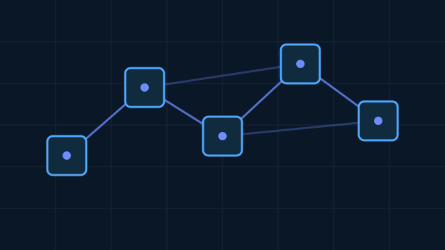

C9 · PLANNED / IN DEVELOPMENTC9 — Blockchain Financial Networks
A network-agnostic observability framework for blockchain-native financial activity.
HMI evidence not yet available.Explore Blockchain →VR1 transforms heterogeneous financial data into structured, synchronized, and reproducible observations. It does not predict prices, generate trading signals, or execute trades.
C1–C8 are implemented observational pipelines validated primarily through emulator, synthetic, and replay workflows. Live-provider acquisition paths depend on external provider credentials and applicable data access. C9 is a network-agnostic common architecture that is planned and in development.
 C1 · OPERATIONALPricesView HMI evidence →
C1 · OPERATIONALPricesView HMI evidence →
 C2 · OPERATIONALCVD & Order FlowView HMI evidence →
C2 · OPERATIONALCVD & Order FlowView HMI evidence →
 C3 · OPERATIONALOpen Interest & FundingView HMI evidence →
C3 · OPERATIONALOpen Interest & FundingView HMI evidence →
 C4 · OPERATIONALETF & Exchange FlowsView HMI evidence →
C4 · OPERATIONALETF & Exchange FlowsView HMI evidence →
 C5 · OPERATIONALOn-Chain & MinersView HMI evidence →
C5 · OPERATIONALOn-Chain & MinersView HMI evidence →
 C6 · OPERATIONALVolatility & Market RegimesView HMI evidence →
C6 · OPERATIONALVolatility & Market RegimesView HMI evidence →
 C7 · OPERATIONALLiquidations & PositioningView HMI evidence →
C7 · OPERATIONALLiquidations & PositioningView HMI evidence →
 C8 · OPERATIONALLiquidity MicrostructureView HMI evidence →
C8 · OPERATIONALLiquidity MicrostructureView HMI evidence →

C9 · PLANNED / IN DEVELOPMENTA network-agnostic observability framework for blockchain-native financial activity.
HMI evidence not yet available.Explore Blockchain →